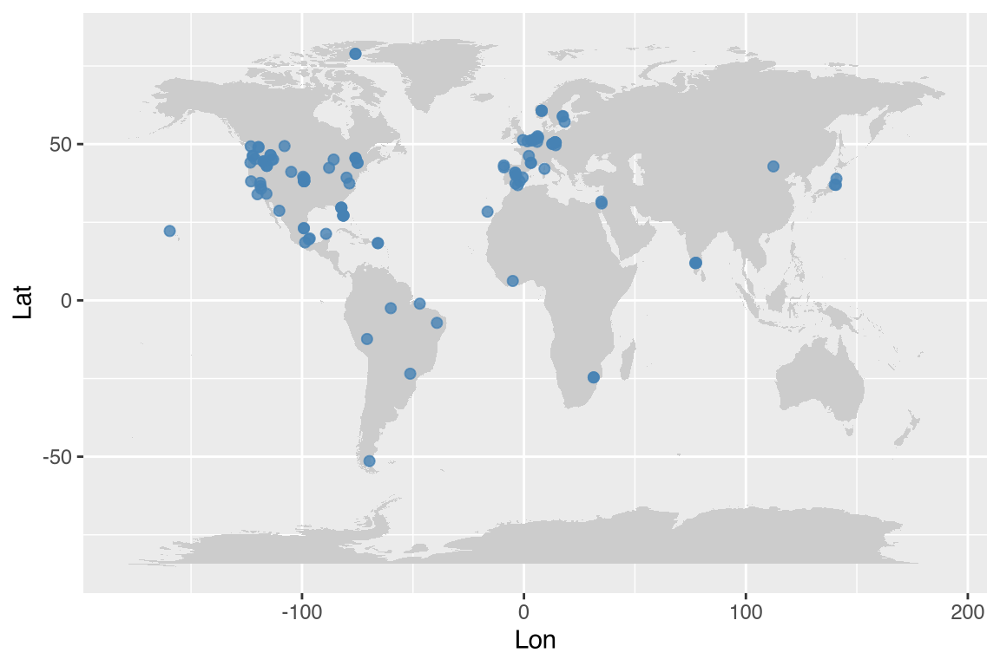
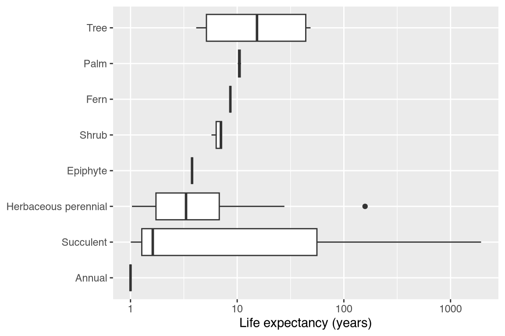

vignettes/a02_RcompadreTidy.Rmd
a02_RcompadreTidy.RmdRcompadre includes methods for a variety of functions in the “Tidyverse”, a popular group of R packages geared toward data analysis, including dplyr (a grammar of data manipulation) and ggplot2 (a grammar of graphics). This vignette covers manipulation of CompadreDB objects using dplyr, and a few examples of plotting CompadreDB objects using ggplot2. Users new to these packages may wish to check out more introductory materials (e.g. the dplyr vignette, or the Data Visualization chapter of R for Data Science).
The dplyr package includes an operator called the pipe (%>%) (from the magrittr package), which passes an object on the left to the first argument of a function on the right.
Though we generally don’t need to, we can explicitly refer to the object on the left using a dot (".").
The dot notation is particularly helpful if we want to pass the object on the left to an argument other than the first one.
x <- 1:3
y %>% data.frame(col1 = x, col2 = .) # use dot to pass object to second argumentUsing a pipe in a single line isn’t that helpful. The real benefits come when we use pipes in multi-line expressions to carry out a sequence of related operations.
Let’s say we want to remove all rows where matA contains missing values (NA). We can use cdb_flag() to add a column checking for NA (column “check_NA_A”), and then use subset() to remove those rows. Here are two approaches without piping
# approach 1 (nested functions)
compadre_use <- subset(cdb_flag(Compadre), check_NA_A == FALSE)
# approach 2 (intermediate step)
compadre_flag <- cdb_flag(Compadre)
compadre_use <- subset(compadre_flag, check_NA_A == FALSE)and here’s the equivalent piped sequence
compadre_use <- Compadre %>%
cdb_flag() %>% # first argument is Compadre, from previous line
subset(check_NA_A == FALSE) # first argument is output of cdb_flag()The advantage of piping here is that we don’t have to use nested functions (subset(cdb_flag())), and we don’t have to create object names for every intermediate step in our analysis.
mutate functionThe mutate() function in dplyr adds one or more new columns to a data frame (or in our case, a CompadreDB object). Often the new column will be based on some transformation of one or more of the existing columns.
Let’s say we want to conduct an analysis comparing Nordic countries to the rest of Europe. We can use subset() to limit the database to Europe, and then use mutate() to create a new column identifying rows from Nordic countries.
compadre_euro <- Compadre %>%
subset(Continent == "Europe") %>%
mutate(Nordic = Country %in% c("NOR", "SWE", "DNK", "ISL", "FIN"))mutate with Rcompadre functions that return vectorsA variety of Rcompadre functions take a CompadreDB object as their first argument and return a vector. To use these functions within mutate() in a piped sequence, we generally need to explicitly refer to the object on the left side of the pipe with a dot (".").
Here’s an example with the Rcompadre functions mpm_has_active() and cdb_id_studies(), each of which take a CompadreDB object and return a vector.
compadre_use <- Compadre %>%
mutate(has_active = mpm_has_active(.)) %>%
subset(has_active == TRUE) %>%
mutate(StudyID = cdb_id_studies(.))In the example above, the pipe passes a CompadreDB object to the first arguments of mutate() and subset(), respectively. The dot for the first argument is implicit. Then, within mutate(), we use the dot again (explicitly this time) to pass the CompadreDB object to mpm_has_active() or cdb_id_studies().
We can also use the dot notation approach to extract components from the CompadreMat objects in the column mat, such as matA, matU, matF, matC, matrixClass, MatrixClassOrganized, or MatrixClassAuthor. Each of these components can be accessed using an accessor function of the same name. Here’s how to extract a list of matU and a list of MatrixClassOrganized from each row of the database, and add these lists to a CompadreDB object as new columns:
compadre_unnest <- Compadre %>%
mutate(mat_U = matU(.),
m_class_organized = MatrixClassOrganized(.))mutate with the apply functionsJust like creating a new column with $ (e.g. compadre$new_col <- ...), each expression within mutate() must return a vector of the same length as the number of rows in the data frame, or return a single value which will be recycled for all rows. For some operations this requires vectorization.
Let’s say we want to calculate the population growth rate for every matrix in the database. We can use the lambda() function in the popbio library, but it can only take a single matrix at a time.
To apply lambda() to a list of matrices we can use sapply(). But first we need to remove matrices with missing values, because these will cause lambda() to fail.
compadre_lambda <- Compadre %>%
cdb_flag() %>%
subset(check_NA_A == FALSE) %>% # remove matrices with missing values
mutate(mat_A = matA(.)) %>% # extract list-column of matA
mutate(lam = sapply(mat_A, lambda)) # apply lambda() to every matAIn the example above, sapply() returns a scalar value for every row of the database. If we instead want to derive a more complex object for every row such as a vector or matrix, we can use the function lapply() which always returns a list. In the example below we use lapply() to calculate vectors of stage-specific survival (column sums of matU) for every row of the database.
Let’s say we want to know the survival probability for the first ‘active’ stage class (i.e. a stage that’s not dormant or propagule) for every row of the database. One approach is to write our own function that takes matU and the integer index of the first active stage class, and returns the corresponding survival probability, e.g.
SurvFirstActive <- function(matU, first_active) colSums(matU)[first_active]Notice that this function has two arguments, both of which will vary across rows of the database. We therefore need to vectorize this function over both arguments, which we can do with mapply() (i.e. “multivariate apply”). Here’s an example:
compadre_surv_first_active <- Compadre %>%
mutate(surv_1 = mapply(FUN = SurvFirstActive, # function
matU = matU(.), # argument 1
first_active = mpm_first_active(.)) # argument 2
)group_by and summarize functionsThe group_by() and summarize() functions are used for split-apply-combine operations, where we want to apply a function separately to different groups within our data, and then recombine the results.
Here’s an example. We’ll use group_by() to group our database by unique values of species (column ‘SpeciesAccepted’), and then use summarize() to count the number of unique populations (column ‘MatrixPopulation’) for each group. Notice that the output is a regular tibble (i.e. no longer a CompadreDB object) with one row for each unique ‘group’ (i.e. species).
# count number of unique populations by species
Compadre %>%
group_by(SpeciesAccepted) %>%
summarize(n_populations = length(unique(MatrixPopulation))) %>%
arrange(desc(n_populations)) # arrange in descending order of n_pops
#> # A tibble: 110 x 2
#> SpeciesAccepted n_populations
#> <chr> <int>
#> 1 Aster amellus 3
#> 2 Echinacea angustifolia 3
#> 3 Lepidium davisii 3
#> 4 Pyrrocoma radiata 3
#> 5 Androsace elongata 2
#> 6 Armeria caespitosa 2
#> 7 Asarum canadense 2
#> 8 Astragalus peckii 2
#> 9 Astragalus scaphoides 2
#> 10 Calochortus lyallii 2
#> # … with 100 more rowsIf, instead of a summary table with one row per species, we would rather append the number of populations per species as a new column of our CompadreDB object, then we can follow group_by() with mutate() instead of summarize(). Here’s an example:
# subset to species with 10+ unique populations
compadre_replicated_pops <- Compadre %>%
group_by(SpeciesAccepted) %>%
mutate(n_pops = length(unique(MatrixPopulation))) %>%
ungroup() %>%
subset(n_pops >= 10)Make sure to use ungroup() after you’re finished with the groups, to prevent unexpected behaviour later on.
It is a common task in comparative analyses to obtain a single representative of each species. One way that users can do that is by using group_by(), followed by slice() and sample() to randomly select a representative from each accepted species.
ggplot
Rcompadre includes methods that allow CompadreDB objects to be used as data arguments within ggplot(), just like any old data frame. Below are some example plots.
Plot study coordinates on world map:
ggplot(Compadre, aes(Lon, Lat)) +
borders(database = "world", fill = "grey80", col = NA) +
geom_point(col = "steelblue", size = 1.8, alpha = 0.8)
Boxplots of life expectancy from the first non-propagule stage, arranged by OrganismType, based on ‘grand mean matrices’ from studies of wild, unmanipulated populations:
This one is rather advanced, combining all of the topics in this vignette. So don’t worry if you can’t immediately understand every line.
# function to calculate life expectancy
lifeExpectancy <- function(matU, startLife) {
N <- solve(diag(nrow(matU)) - matU)
return(colSums(N)[startLife])
}
compadre_life_expect <- Compadre %>%
filter(MatrixComposite != "Seasonal", # filter is the dplyr version of subset
MatrixTreatment == "Unmanipulated",
MatrixCaptivity == "W",
AnnualPeriodicity == "1") %>%
mutate(StageID = cdb_id_stages(.)) %>%
cdb_collapse(columns = "StageID") %>%
cdb_flag() %>%
filter(check_NA_U == FALSE,
check_zero_U == FALSE,
check_singular_U == FALSE) %>%
mutate(matU = matU(.), start_life = mpm_first_active(.)) %>%
mutate(life_expectancy = mapply(lifeExpectancy, matU, start_life)) %>%
filter(life_expectancy >= 1) %>%
mutate(OrganismType = reorder(OrganismType, life_expectancy, median))
ggplot(compadre_life_expect, aes(OrganismType, life_expectancy)) +
geom_boxplot() +
scale_y_log10() +
coord_flip() +
labs(x = NULL, y = "Life expectancy (years)")